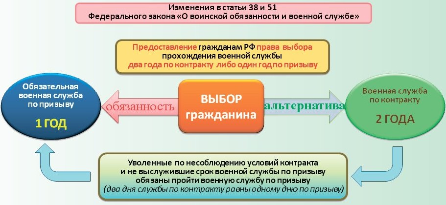
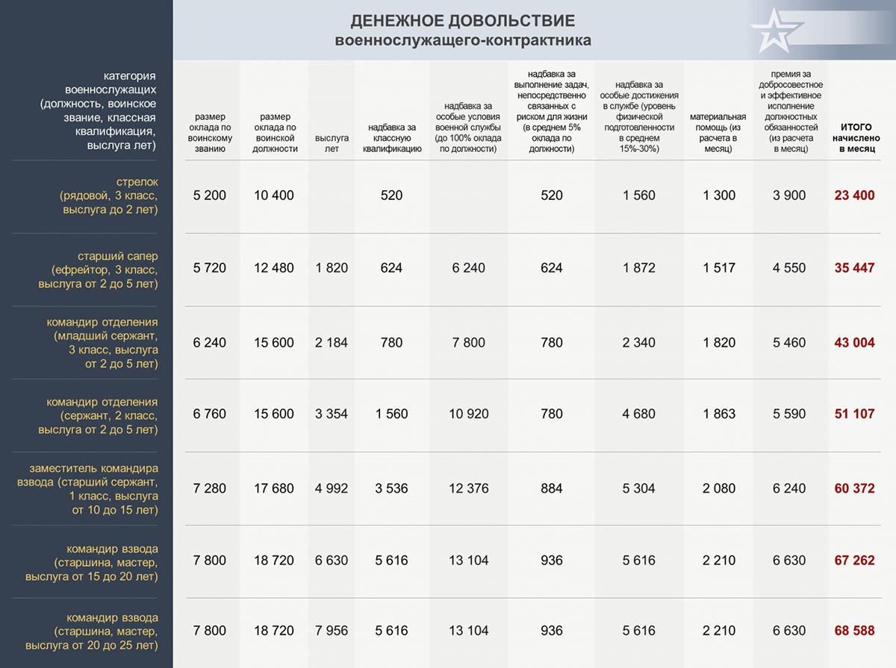

Поступая на военную службу по контракту, вы выбираете стабильность, широкие возможности для
самореализации, достойный уровень жизни и высокий социальный статус.
Что такое
контракт:
Возможность вместо срочной службы (о минусах, которой вы можете прочитать в разделе "Правильный
выбор") подписать контракт.
Преимущества контрактной службы вместо срочной:
С июля 2014 года Федеральным законом "О воинской обязанности и военной службе" предоставлена возможность для граждан, получивших высшее образование, выбирать между одним годом службы по призыву и двумя или тремя годами службы по контракту.
Основные права военнослужащих, а также основы государственной политики в области
правовой и
социальной защиты военнослужащих, граждан, уволенных с военной службы, и членов их семей определены
Федеральным законом от 27 мая 1998 г. № 76-ФЗ «О статусе военнослужащих».
Для военнослужащих установлена единая система правовой и социальной защиты, а также материального и
иных видов обеспечения с учетом занимаемых воинских должностей, присвоенных воинских званий, общей
продолжительности военной службы, в том числе и в льготном исчислении, выполняемых задач, условий и
порядка прохождения ими военной службы.
1. Денежное довольствие, состоящее из месячного оклада в соответствии с присвоенным воинским званием и месячного оклада в соответствии с занимаемой воинской должностью, которые составляют оклад месячного денежного содержания военнослужащих, а также ежемесячных и иных дополнительных выплат. С 1 января 2018 г. оклады по воинским званиям и оклады по воинским должностям проиндексированы на 4%. Так, оклады по воинскому званию, если брать минимальные и максимальные размеры, составляют от 5 200 рублей у рядового и до 31 200 рублей у маршала. Соответственно, оклады по воинской должности достигли 10 400 рублей у стрелка и 46 800 рублей у первого заместителя Министра обороны Российской Федерации.
Средний размер денежного довольствия военнослужащих по контракту, замещающих воинские должности рядового и сержантского состава, составляет 25 000 - 45 000 рублей в месяц. С учетом всех ежемесячных и иных дополнительных выплат денежного довольствия, возрастающих по мере увеличения выслуги лет, должностного уровня, уровня профессионального мастерства, региональных коэффициентов и ежегодной индексации денежное довольствие будет увеличиваться.
2. Бесплатный проезд к новому месту службы и в командировку. Проезд на безвозмездной основе один раз в год к месту проведения основного отпуска и обратно военнослужащим, проходящим службу по контракту в районах Крайнего Севера и приравненных к ним местностях, в том числе на территории субъектов Российской Федерации, входящих в Уральский, Сибирский и Дальневосточный федеральные округа, и одному члену его семьи; военнослужащие сами приобретают за деньги билеты на себя и членов своих семей на удобные им авиарейсы или поезда, следующие к месту отпуска, а Министерство обороны Российской Федерации компенсирует эти расходы после возвращения из отпуска. Проезд на безвозмездной основе на избранное место жительства при увольнении с военной службы.
3. Продовольственное обеспечение, в том числе путем организации питания по месту военной службы - для отдельных категорий военнослужащих, и выдачей продовольственного пайка - для военнослужащих, проходящих военную службу по контракту за пределами территории Российской Федерации, в районах Крайнего Севера и приравненных к ним местностях.
4. Бесплатное вещевое обеспечение.
5. Жилищное обеспечение:
Стать участником НИС можно при заключении второго контракта. Каждый участник НИС не менее чем через три года его участия в накопительно-ипотечной системе имеет право на заключение с уполномоченным федеральным органом договора целевого жилищного займа.
6. Обязательное государственное личное страхование за счет средств федерального бюджета
7. Социальные гарантии в связи с обучением в образовательных организациях в период службы, а также преимущественное право на поступление после увольнения с военной службы в государственные образовательные организации высшего и среднего профессионального образования и на подготовительные отделения федеральных государственных образовательных организаций высшего образования.
8. Выплату подъемного пособия при перемещении к новому месту службы в размере одного оклада денежного содержания на военнослужащего и 25% от него на каждого члена семьи
9. Перевоз на безвозмездной основе до 20 тонн личного имущества в контейнерах от прежнего места жительства при переводе на новое место военной службы.
10. Дополнительные социальные гарантии и компенсации при выполнении задач в условиях чрезвычайного положения и при вооруженных конфликтах.
11. Единовременное пособие при увольнении с военной службы при общей выслуге менее 20
лет - 2 оклада
денежного содержания, а при выслуге 20 лет и более - 7 окладов денежного содержания.
Военнослужащим, награжденным в период прохождения военной службы государственным орденом или
удостоенным почетных званий Союза ССР или РФ, размер единовременного пособия увеличивается на один
оклад денежного содержания.
12. Бесплатное обследование, лечение и реабилитационное обеспечение в военно-медицинских учреждениях, в том числе ежегодное диспансерное наблюдение.
13. Изготовление и ремонт зубных протезов (за исключением протезов из драгоценных металлов и других дорогостоящих материалов).
14. Бесплатное обеспечение лекарствами, изделиями медицинского назначения по рецептам
врачей в
медицинских, военно-медицинских подразделениях, частях и организациях.
При отсутствии по месту военной службы или месту жительства военнослужащих военно-медицинских
организаций или соответствующих отделений в них либо специального медицинского оборудования, а также
в неотложных случаях медицинская помощь оказывается в учреждениях государственной или муниципальной
систем здравоохранения. Расходы указанным учреждениям здравоохранения по оказанию медицинской помощи
военнослужащим, возмещаются в порядке, установленном Правительством Российской Федерации.
Члены семей военнослужащих проходящих службу по контракту (из числа солдат и сержантов) имеют право
на медицинскую помощь в учреждениях государственной или муниципальной систем здравоохранения и
подлежат обязательному медицинскому страхованию на общих основаниях с другими гражданами Российской
Федерации.
15. Право на пенсионное обеспечение при условии наличия выслуги 20 и более лет.
Подробную информацию и ответы на все возможные вопросы вы можете найти в книге "Военная служба по контракту 100 вопросов и ответов". Нажмите на обложку, чтобы открыть книгу
Если у вас остались вопросы, вы можете задать его ниже. Мы подготовим ответ и перезвоним вам.